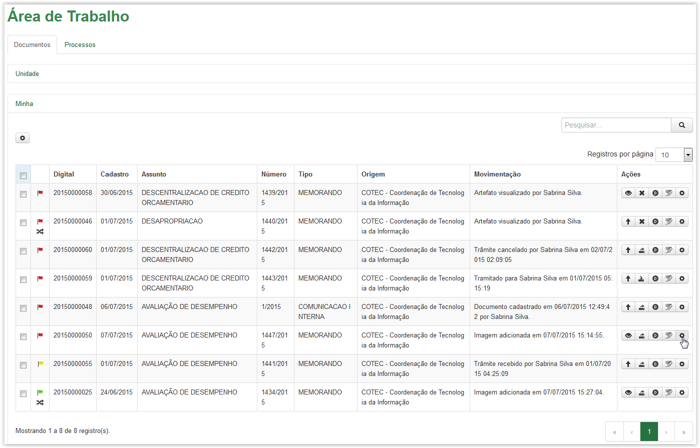
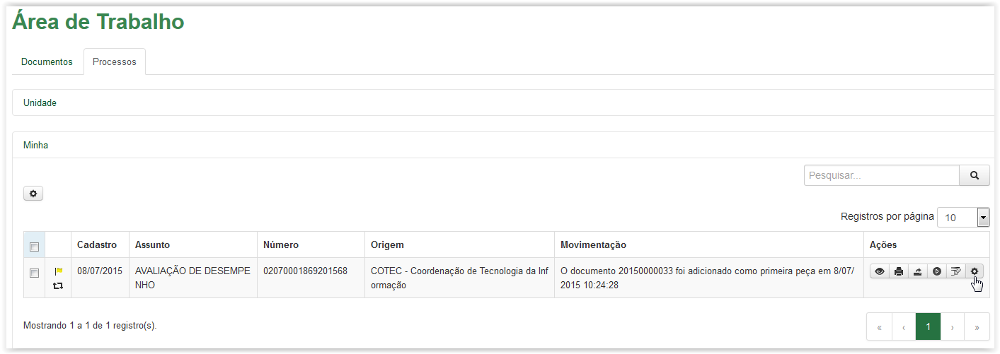

Vincular artefato
Para vincular um artefato, clique no ícone  disponível na coluna Ações da Área de Trabalho. Esse ícone está disponível tanto na aba de Documentos quanto na aba de Processos:
disponível na coluna Ações da Área de Trabalho. Esse ícone está disponível tanto na aba de Documentos quanto na aba de Processos:

Aba Documentos - Ícone opções

Aba Processos - Ícone opções
Após clicar no ícone o sistema apresenta uma lista com algumas opções. Selecione a opção Vincular:
Aba Documentos - Selecionando a opção Vincular
Aba Processos - Selecionando a opção Vincular
A tela Vincular é exibida apresentando em seu título o número do artefato (documento ou processo) selecionado. Quando não existe nenhum artefato disponível para ser vinculado, o sistema apresenta na grid da Lista de artefatos a mensagem “Nenhum registro encontrado”. Caso contrário, o sistema disponibiliza todos os artefatos que podem ser vinculados:
Tela Vincular - Nenhum artefato disponível para ser vinculado
Tela Vincular - Artefato disponível para ser vinculado
 Formas de visualizar os artefatos na Lista de artefatos!
Formas de visualizar os artefatos na Lista de artefatos!


Para sair da tela Vincular, clique no botão  :
:
Tela Vincular
O sistema retornará para a Área de Trabalho.
Created with the Personal Edition of HelpNDoc: Easily create EPub books